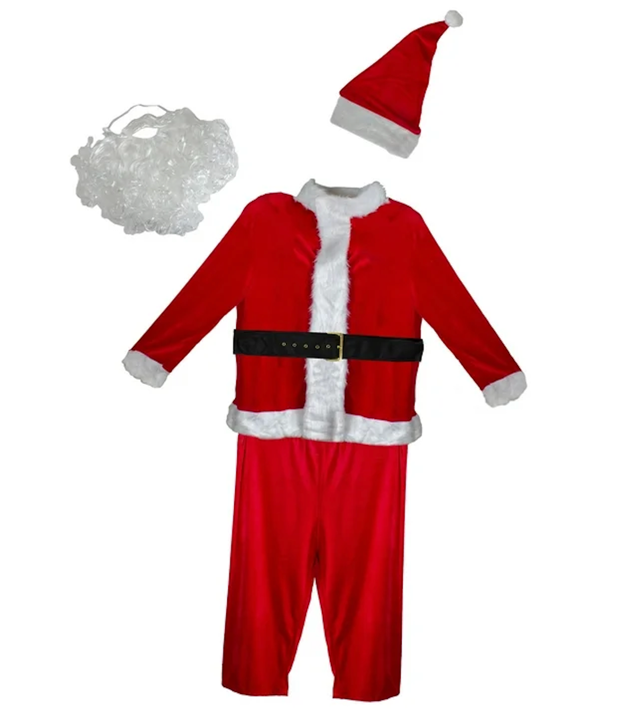

Santa Claus Costumes
A lot of people enjoy dressing up during the holidays, and Santa costumes are often a very popular choice. There are costumes in different styles as well as materials and some include belts, hats or other accessories. Some wear Santa costumes at parties, while others wear them when taking holiday photos or at family events.
These costumes can be bought as a set or as separate pieces to customize your own costume to your liking. The sizes and fits vary and some costumes are mostly for decoration rather than practical use.
Santa costumes are often seen as a symbol of Christmas and we often see them in movies and in pictures. They create a familiar holiday feeling and many families keep one stored at home to use once the season arrives.